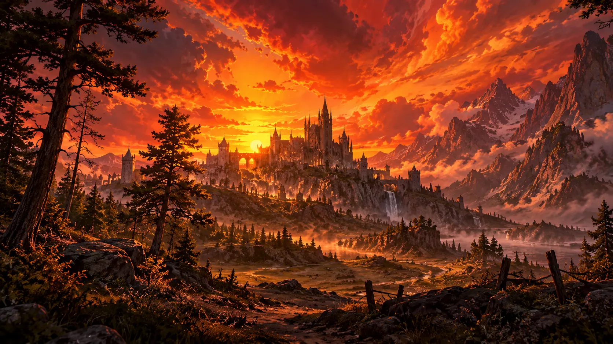

Tierra de Dragones
Hace un siglo, una guerra cataclísmica entre los Dragones Cromáticos, al mando de los siervos de Tiamat, y los Dragones Metálicos, guiados por la voluntad de Bahamut, redujo el continente de Urdar a un despojo de lo que alguna vez fue. Las tierras del norte quedaron convertidas en páramos ardientes, llanuras calcinadas y montañas hechas escombros, mientras que los reinos del sur aún resisten, aunque desgarrados y divididos por viejas heridas.